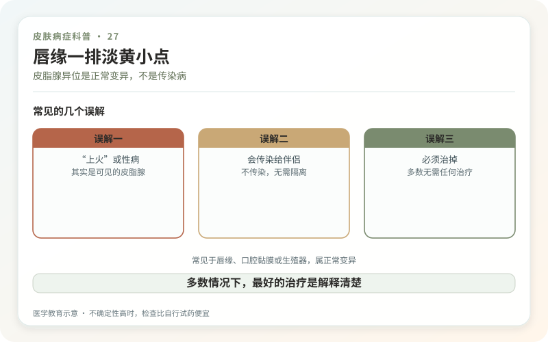
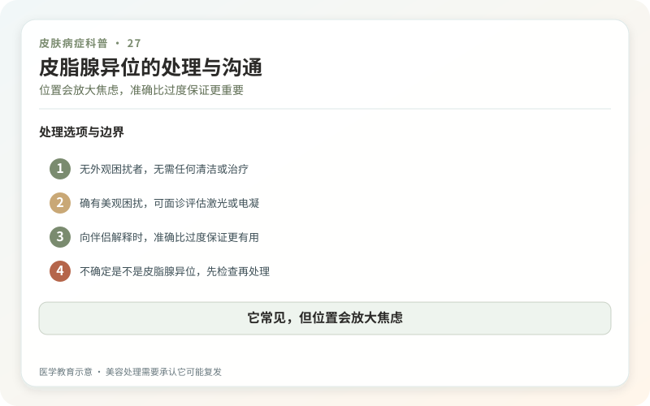

嘴唇边缘、口腔内侧或生殖器皮肤上出现一排淡黄、白色、1—5毫米的小点，拉伸皮肤时更明显，很可能是皮脂腺异位，也叫Fordyce斑。它的本质是没有伴随毛囊、但位置较表浅而能被看见的皮脂腺。
这是很常见的正常变异，不是细菌、真菌或病毒感染，也不是性传播疾病。它通常从青春期后更明显，可能成群存在，不会因为接吻或性接触传给伴侣。

为什么总被当成“上火”或性病？
唇缘的小黄点容易被叫作脂肪粒，生殖器上的小丘疹则可能引起尖锐湿疣或疱疹焦虑。Fordyce斑通常颜色均匀、大小相近、长期稳定，不痛不痒；尖锐湿疣表面和形态不同，疱疹常有成簇水疱、疼痛和破溃过程。
但照片自诊有局限。皮损突然增加、表面破溃、出血、明显疼痛或伴分泌物时，应由皮肤科、口腔科或性病专科判断，必要时做相应检查。

多数情况下，最好的治疗是解释清楚
Fordyce斑不影响身体健康，不会“堵住以后发炎”，也没有恶变前奏。确定诊断后通常无需用药。反复挤压、针挑，挤出的少量皮脂很快会再次产生，还可能造成唇部肿胀、感染和色沉。
所谓排毒、清火和抗病毒药不能改变皮脂腺位置。把正常变异当疾病长期治疗，往往比小点本身造成更大焦虑。
如果外观确实困扰，能做什么？
医生可能讨论二氧化碳激光、电干燥、微小切除或其他操作，但证据和效果并非对每个人都一致。唇部和生殖器皮肤敏感、颜色和质地要求高，治疗可能留下红肿、色沉、色减、凹陷或瘢痕，也可能复发。
大面积“清空”尤其要谨慎。可先选择少量、隐蔽位置测试，等待稳定恢复后再决定；任何承诺无痛、无痕、永久不长的宣传都不可信。
日常护理不需要特殊清洁
温和清洁即可，唇部干燥可用成分简单的润唇产品，生殖器部位避免香精洗液和过度搓洗。高倍放大镜下人人都有皮肤结构，不要把离得很近才看见的小点当成病变进展。
如果担心伴侣误解，比起自行偷偷点掉，更有效的是在诊断明确后解释：它不传染，与性行为历史无关。医生开具的诊断记录也可帮助沟通。
皮脂腺异位最容易被过度治疗，因为它位于令人敏感的位置。医学的价值有时不是消掉一个小点，而是把不必要的恐惧拿走。
它常见，但位置会放大焦虑
唇缘、口腔或生殖器出现黄白小点，很多人第一反应是感染或性病。皮脂腺异位是正常皮脂腺出现在无毛囊部位，通常不痛不痒、不传染，也与卫生差或性行为无关。真正有价值的信息是出现多久、是否对称稳定、有无疼痛溃疡、分泌物或近期高风险接触。仅凭“长在私密处”不能确诊，也不能反向证明没有感染。
不确定时，检查比自行试药便宜
尖锐湿疣、传染性软疣、疱疹和其他正常解剖变异可能被混淆。若病灶新发、成簇变化、表面粗糙、破溃或伴其他症状，应到皮肤科、口腔科或性健康门诊面诊。不要同时涂抗真菌、抗病毒、腐蚀剂和激素“试试看”；刺激后的红肿会让原本清楚的形态变模糊，也可能伤害黏膜。
美容处理需要承认它可能复发
若诊断明确且外观确实困扰，可讨论激光、电外科或其他方法，但要权衡疼痛、肿胀、色素改变、瘢痕和黏膜恢复。处理掉可见腺体，不代表永不出现。先选择少量区域测试，等完全恢复后再决定是否扩大，比追求一次清空更安全。伴侣沟通时可以说明这是常见良性变异，不需要把自己描述成“有病”或偷偷反复处理。
对伴侣最有用的是准确，而不是过度保证
诊断明确后，可以直接说明它是常见的良性皮脂腺变异、不具有传染性；若诊断尚未确认，则诚实说正在评估，并在结果前采取合理防护。既不要因羞耻隐瞒新发溃疡或高风险接触，也不要把正常变异说成“病毒携带”。准确命名能减少不必要检测、治疗和关系冲突。
如果焦虑来自“它会不会传给别人”，优先完成一次可靠诊断；如果困扰来自外观，再讨论治疗。先把问题类型分清，能避免在正常变异上反复做性病检测，也避免在真正有风险症状时只做美容处理。